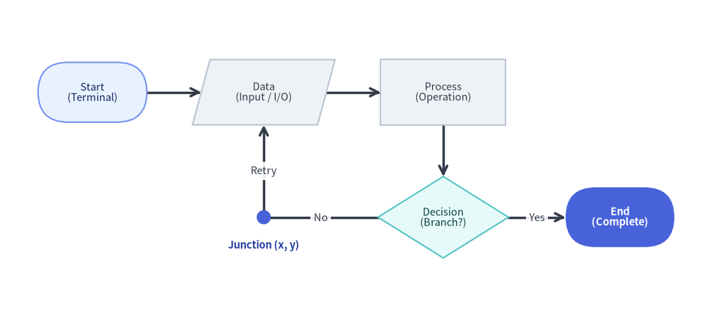
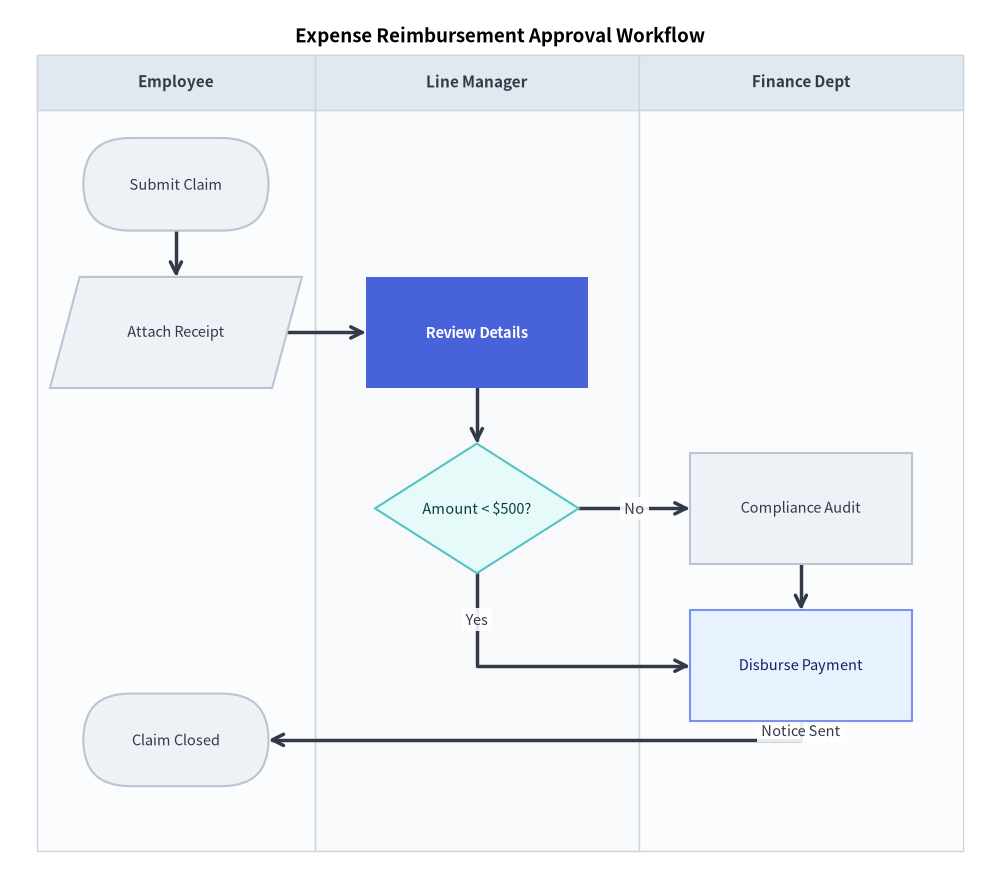

FlowDiagram: ISO Flowcharts & Cross-Functional Swimlanes
FlowDiagram implements standard flowchart symbols according to ISO 5807 and JIS X 0121 standards, with native support for cross-functional swimlane layouts (vertical columns or horizontal rows) sharing a unified global coordinate plane.
1. Overview & Standard Symbols

Source Code
from drawlib.canvas import save, setup
from drawlib.diagrams.flow import Data, Decision, End, FlowDiagram, Process, Start
from drawlib.shapes import circle
from drawlib.styles import Colors, Styles
from drawlib.text import text
setup(width=130, height=58)
flow = FlowDiagram(
node_style=Styles.Neutral.patch(text_size=10.5),
edge_style=Styles.DarkBold,
edge_text_style=Styles.Dark.patch(text_size=10.5),
width=122.0,
height=50.0,
)
# 6 Standard Flowchart Symbol Classes: Start, Data, Process, Decision, Junction, End
s_start = flow.add(
Start("Start\n(Terminal)", width=20.0, height=11.0, style=Styles.PrimaryNeutral.patch(text_size=10.5)),
xy=(13.0, 37.0),
)
s_data = flow.add(Data("Data\n(Input / I/O)", width=23.0, height=12.0), xy=(44.5, 37.0))
s_proc = flow.add(Process("Process\n(Operation)", width=23.0, height=12.0), xy=(77.5, 37.0))
s_dec = flow.add(
Decision("Decision\n(Branch?)", width=24.0, height=15.0, style=Styles.SecondaryNeutral.patch(text_size=10.5)),
xy=(77.5, 14.0),
)
# Junction waypoint for orthogonal retry loop back to Data
j_retry = flow.junction((44.5, 14.0))
s_end = flow.add(
End("End\n(Complete)", width=20.0, height=11.0, style=Styles.PrimaryFlat, text_style=Styles.WhiteBold.patch(text_size=10.5)),
xy=(110.0, 14.0),
)
s_start.connect(s_data)
s_data.connect(s_proc)
s_proc.connect(s_dec, start_side="bottom", end_side="top")
s_dec.connect(s_end, label="Yes", start_side="right", end_side="left")
s_dec.connect(j_retry, label="No", start_side="left", end_side="right")
j_retry.connect(s_data, label="Retry", end_side="bottom")
flow.draw(xy=(4.0, 4.0))
# Highlight the zero-size Junction coordinate point (4 + 44.5 = 48.5, 4 + 14 = 18)
circle((48.5, 18.0), radius=1.3, style=Styles.PrimaryFlat)
text(
(48.5, 12.8),
"Junction (x, y)",
style=Styles.DarkBold.patch(text_size=10.5, text_color=Colors.Primary5),
)
save()
Flowchart Symbol Classes
| Class | Shape Geometry | Default Size ($W \times H$) | Standard ISO Usage |
|---|---|---|---|
Start |
Stadium / Pill (shape_r=5.0) |
20.0 x 10.0 |
Initial entry point |
End |
Stadium / Pill (shape_r=5.0) |
20.0 x 10.0 |
Terminal completion point |
Process |
Rectangle | 24.0 x 12.0 |
Execution task, calculation, or step |
Decision |
Rhombus / Diamond | 22.0 x 14.0 |
Conditional branch (Yes/No, True/False) |
Data |
Parallelogram | 24.0 x 12.0 |
Input, output, or file I/O |
Junction |
Coordinate point | 0.0 x 0.0 |
Wire tap, waypoint, or merge junction |
Lane |
Boundary container | Dynamic | Swimlane column or row |
2. Global Coordinate Architecture & Core API Reference
In Drawlib's FlowDiagram, swimlanes provide a structured visual background and column/row headers without trapping nodes inside local relative coordinates.
All nodes share a single global canvas coordinate system (flow.add(node, xy=(cx, cy)) places the center (cx, cy) of the shape). This means:
- Steps occurring at the same stage in different departments can be placed at the exact same vertical $Y$ coordinate.
- Connecting lines cross swimlane boundaries cleanly with automatic orthogonal right-angle routing.
Parameter Reference Tables
FlowDiagram Class
| Parameter | Type | Default | Description |
|---|---|---|---|
node_style |
Style |
(Required) | Base Style object for flowchart shapes in the diagram. |
edge_style |
Style |
(Required) | Base Style object for connection lines and arrowheads. |
edge_text_style |
Style |
(Required) | Base Style object for connection text labels. |
title |
str |
"" |
Optional banner title displayed above the diagram. |
title_style |
Style | None |
None |
Optional Style override for the diagram title. |
width |
float | None |
None |
Optional fixed width of the diagram canvas (auto-fit if None). |
height |
float | None |
None |
Optional fixed height of the diagram canvas (auto-fit if None). |
style |
Style | None |
None |
Optional Style for the overall diagram background card. |
lane_orientation |
Literal["vertical", "horizontal"] |
"vertical" |
Swimlane layout orientation ("vertical" columns or "horizontal" rows). |
FlowNode & Concrete Node Classes (Start, End, Process, Decision, Data)
| Parameter | Type | Default | Description |
|---|---|---|---|
text |
str |
"" ("Start" / "End" on terminals) |
Text label centered inside the flowchart symbol (supports \n). |
width |
float |
24.0 (20.0 for Start/End, 22.0 for Decision) |
Outer width of the symbol in canvas units. |
height |
float |
12.0 (10.0 for Start/End, 14.0 for Decision) |
Outer height of the symbol in canvas units. |
style |
Style | None |
None |
Optional Style override for shape fill, border stroke, and shape_r. |
text_style |
Style | None |
None |
Optional Style override for the node text label. |
shape_type |
Literal["process", "decision", "start", "end", "data"] |
"process" |
Underlying symbol geometry (FlowNode base constructor only). |
show |
bool |
True |
Visibility flag (connected FlowEdge lines auto-hide when False). |
- Anchor & Geometry Properties on
FlowNode:node.xy,node.center,node.top,node.bottom,node.left,node.right,node.get_anchor(side="auto"), andnode.get_bounds().
Core Registration, Swimlane, Connection & Waypoint Methods
- Node Registration (
flow.add):
Placesflow.add(item: FlowNode | Junction, xy: tuple[float, float], *, show: bool | None = None) -> FlowNode | Junctionitemat center coordinatexyand returns the mutable instance (node.show,node.style,node.text_style). Ifshow=False, the node and its connected edges are hidden during rendering while diagram bounds remain unchanged. - Swimlane Registration (
flow.add_lane):
Adds a vertical column (flow.add_lane( title: str, size: float | None = None, width: float | None = None, height: float | None = None, style: Style | None = None, text_style: Style | None = None, header_size: float = 6.0, header_style: Style | None = None, show: bool = True, ) -> Lanewidthorsize, default30.0) or horizontal row (heightorsize, default30.0) swimlane and returns theLaneinstance. Settingshow=Falsehides the lane visual while keeping subsequent lane offsets fixed. - Connecting Nodes (
FlowNode.connect&flow.connect):
Also callable at the diagram level vianode.connect( target: FlowNode | Junction, label: str = "", arrow: Literal["->", "<-", "<->", "-"] | None = None, routing: Literal["orthogonal", "direct"] = "orthogonal", start_side: Literal["left", "right", "top", "bottom", "auto"] = "auto", end_side: Literal["left", "right", "top", "bottom", "auto"] = "auto", style: Style | None = None, text_style: Style | None = None, padding: float | tuple[float, float] = 0.0, show: bool = True, ) -> FlowEdgeflow.connect(start, end, ...) -> FlowEdge(orflow.add_edge(edge, *, show=None) -> FlowEdge). Whenarrow=None, defaults to"-"iftargetis aJunction, otherwise"->". - 1-to-N Bus Fan-Out (
FlowNode.fork) &Junction:node.fork(targets: list[Connectable], at_x: float | None = None, at_y: float | None = None, style: Style | None = None, padding: float | tuple[float, float] = 0.0, show: bool = True) -> list[FlowEdge]: Branches fromnodeto multiple targets through an intermediateJunction.flow.junction(xy: tuple[float, float], *, show: bool = True) -> Junction: Creates and registers a zero-size connectable waypoint atxy(j.connect(...)).
FlowEdgeWaypoint Methods:edge.points(waypoints: list[tuple[float, float]]) -> FlowEdge: Sets explicit intermediate(x, y)waypoints and returnsself.edge.via(*waypoints: tuple[float, float]) -> FlowEdge: Unpacked variadic shorthand for.points(list(waypoints)).edge.add_point(xy: tuple[float, float]) -> Junction: Appendsxyas a waypoint onedgeand returns a branchingJunctionregistered atxy.
- Sizing & Rendering (
flow.get_size&flow.draw):flow.get_size() -> tuple[float, float]: Returns the overall(width, height)of the diagram.flow.draw(xy=(0.0, 0.0), *, scale: float = 1.0) -> None: Renders the diagram anchored at bottom-leftxy, proportionally scaling all coordinates, lane widths/heights, node dimensions, and font sizes byscale.
3. Vertical Swimlanes: Approval Workflow
The following example illustrates a multi-department expense reimbursement process across three vertical swimlanes:
from drawlib.canvas import save, setup
from drawlib.diagrams.flow import Data, Decision, End, FlowDiagram, Process, Start
from drawlib.styles import Styles
setup(width=108, height=96)
flow = FlowDiagram(
node_style=Styles.Neutral.patch(text_size=10.5),
edge_style=Styles.DarkBold,
edge_text_style=Styles.Dark.patch(text_size=10.5),
title="Expense Reimbursement Approval Workflow",
title_style=Styles.BlackBold.patch(text_size=13.5),
width=100.0,
height=86.0,
)
# 1. Define vertical department lanes (columns from left to right)
lane_lbl = Styles.DarkBold.patch(text_size=11.0)
flow.add_lane("Employee", width=30.0, text_style=lane_lbl)
flow.add_lane("Line Manager", width=35.0, text_style=lane_lbl)
flow.add_lane("Finance Dept", width=35.0, text_style=lane_lbl)
# 2. Add nodes (Y coordinates align corresponding steps horizontally)
submit = flow.add(Start("Submit Claim"), xy=(15.0, 72.0))
receipt = flow.add(Data("Attach Receipt"), xy=(15.0, 56.0))
review = flow.add(
Process("Review Details", style=Styles.PrimaryFlat, text_style=Styles.WhiteBold.patch(text_size=10.5)),
xy=(47.5, 56.0),
)
decision = flow.add(
Decision("Amount < $500?", style=Styles.SecondaryNeutral.patch(text_size=10.5)),
xy=(47.5, 37.0),
)
audit = flow.add(Process("Compliance Audit"), xy=(82.5, 37.0))
auto_pay = flow.add(
Process("Disburse Payment", style=Styles.PrimaryNeutral.patch(text_size=10.5)),
xy=(82.5, 20.0),
)
end = flow.add(End("Claim Closed"), xy=(15.0, 12.0))
# 3. Connect steps
submit.connect(receipt)
receipt.connect(review)
review.connect(decision)
# Decision routing (separate vertical levels avoid label collisions)
decision.connect(audit, label="No", start_side="right", end_side="left")
decision.connect(auto_pay, label="Yes", start_side="bottom", end_side="left")
audit.connect(auto_pay, start_side="bottom", end_side="top")
auto_pay.connect(end, label="Notice Sent", start_side="bottom", end_side="right")
flow.draw(xy=(4.0, 4.0))
save()

4. Horizontal Swimlanes: Order Logistics
By specifying lane_orientation="horizontal", lanes are laid out as stacked horizontal bands:
from drawlib.canvas import save, setup
from drawlib.diagrams.flow import Decision, End, FlowDiagram, Process, Start
from drawlib.styles import Styles
setup(width=130, height=74)
flow = FlowDiagram(
node_style=Styles.Neutral.patch(text_size=10.5),
edge_style=Styles.DarkBold,
edge_text_style=Styles.Dark.patch(text_size=10.5),
title="Fulfillment Logistics Pipeline",
title_style=Styles.BlackBold.patch(text_size=13.5),
lane_orientation="horizontal",
width=120.0,
height=60.0,
)
lane_lbl = Styles.DarkBold.patch(text_size=10.5)
flow.add_lane("Sales Platform", height=30.0, header_size=22.0, text_style=lane_lbl)
flow.add_lane("Distribution Center", height=30.0, header_size=22.0, text_style=lane_lbl)
order = flow.add(Start("New Purchase", width=21.0), xy=(35.0, 45.0))
validate = flow.add(Decision("In Stock?", style=Styles.SecondaryNeutral.patch(text_size=10.5)), xy=(66.0, 45.0))
cancel = flow.add(End("Cancel & Refund", width=25.0), xy=(104.0, 45.0))
pack = flow.add(
Process("Pick & Pack", style=Styles.PrimaryFlat, text_style=Styles.WhiteBold.patch(text_size=10.5)),
xy=(66.0, 15.0),
)
dispatch = flow.add(End("Ship Carrier", width=23.0), xy=(104.0, 15.0))
order.connect(validate)
validate.connect(cancel, label="No", start_side="right", end_side="left")
validate.connect(pack, label="Yes", start_side="bottom", end_side="top")
pack.connect(dispatch)
flow.draw(xy=(5.0, 4.0))
save()

5. Best Practices & Guidelines
- Explicit Decision Exits: Always specify
start_side(e.g.start_side="right"for "No",start_side="bottom"for "Yes") onDecisionnodes to keep branch directions clear and consistent. - Merge with
flow.junction: When multiple paths lead to a single destination or pass through a bottleneck, route them through an intermediate junction to prevent crossing lines. - Lane Width Balancing: Ensure lane widths accommodate the widest nodes with at least 5 coordinate units of padding on either side.